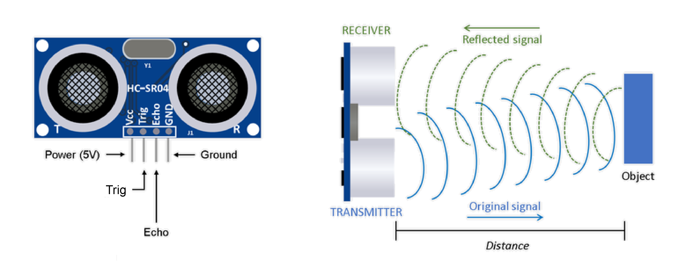

Sesión 7 de mayo_
Sensor de ultrasonidos
Tened presentes los apuntes de el enlace de abajo por si no recordáis algo (en el documento hay cosas que aún no hemos visto)
Acceder a los apuntes
arrow_forward
¿Cómo funciona un sensor de distancia por ultrasonidos?
Un sensor de distancia por ultrasonidos, como dice su nombre, utiliza ultrasonidos para permitirnos averiguar la distancia que hay hasta el primer objeto sólido que haya delante del sensor.
Dentro de las ondas del sonido existe este tipo, los ultrasonidos, que los humanos no somos capaces de oír (generalmente),
pero que funcionan igual en el sentido de cómo se extienden y propagan, por lo tanto podemos decir que tenemos un pequeño altavoz que no podemos oír.
Los ultrasonidos viajan por el aire a la misma velocidad que el sonido (340 metros por segundo, esta velocidad nunca cambia).
Por otro lado tenemos un detector, que es como un micrófono que también detecta estos ultrasonidos.
Por tanto, si lanzamos un "pitido inaudible" desde nuestro altavoz ultrasónico y medimos cuánto tiempo le cuesta a ese sonido regresar al micrófono, ¡PODREMOS SABER LA DISTANCIA ENTRE EL SENSOR Y CUALQUIER COSA QUE HAYA DELANTE SUYO!
¿Cómo montamos el circuito?
El sensor tiene cuatro cables, por tanto necesitamos 4 cables. Podemos usar la breadboard o montar el sensor directamente a los cables. No usaremos resistencias ni otros elementos.
Los cables que hay en el sensor son los siguientes en orden de izquierda a derecha como se ve en la imagen:
- VCC (voltaje a 5V): la energía que necesita para funcionar.
- TRIG (a un pin digital con el símbolo
~): por este pin ENVIAREMOS la señal/sonido (nuestro altavoz). - ECHO (a otro pin digital con el símbolo
~): por este pin RECIBIREMOS DE VUELTA la señal/sonido (nuestro micrófono). - GND (negativo o tierra): el cable negativo de siempre.
Podéis verlo montado en la siguiente imagen:
¿Y el código?
Recordad que utilizamos el código que teníamos del ultrasonidos al que el martes le hicimos unas modificaciones. Lo hemos retocado un poco.
- Preparar las variables del número de los pines a los que estará conectado el sensor. Las pondremos fuera del
void setup()(arriba de todo) y las llamaremosint emitePin = 11;yint recibePin = 10;, respectivamente. - Pondremos también la variable del número (en centímetros) de la distancia. Al principio no le pondremos ningún valor:
float distancia; - DENTRO del
void setup()pondremos los modos de los pines: el que emite estará en modoOUTPUTy el que recibe en modoINPUT, usaremos las variables en vez de los números. - Para que el Arduino nos pase los datos a través del ordenador, iniciaremos la comunicación Serial con
Serial.begin(9600); - DENTRO DEL
void loop()enviaremos la señal durante 10 MICROsegundos (1 microsegundo = 0,000001 segundos o 0,001 milisegundos):digitalWrite(emitePin, LOW); delayMicroseconds(2); digitalWrite(emitePin, HIGH); delayMicroseconds(10); digitalWrite(emitePin, LOW); - Ahora usaremos una NUEVA función de Arduino que nos dice cúantos microsegundos pasan desde que se llama a la función hasta que el valor que llega al pin cambia.
En nuestro caso, no llegará nada de electricidad hasta que vuelva la onda. Cuando lo haga, lo que el pin lea dejará de serLOWy seráHIGH, entonces la función nos dará el tiempo.long duracion = pulseIn(recibePin, HIGH); // Calcular la distancia (en cm) basada en la velocidad del sonido distancia = duracion * (340.0 / 10000.0) / 2.0; // PASAR DE METROS/SEGUNDO A CM/MICROSEGUNDO (340 * 100 / 1000000) // Y LUEGO ENTRE 2 PARA PASAR DEL RECORRIDO DE IDA Y VUELTA A SOLO LA IDA - Si os fijáis bien, hemos utilizado la velocidad del sonido y hemos dividido para 2. ¿Por qué? Porque la onda tiene que ir y volver, y nosotros solo queremos la distancia "de ida" y no el total de ida y vuelta.
- Ahora, por último pero no menos importante, ¡queremos saber la distancia y que no se la quede solo Arduino! Para eso, usaremos una función que ya hemos visto, y vamos a darle un pequeño descanso de 50 milisegundos:
Serial.print(distancia); Serial.println(" centimetros"); delay(50);
Este es el código completo:
int recibePin = 10; // Echo Pin
int emitePin = 11; // Trigger Pin
float distancia; //Duración usada para calcular la distancia
void setup() {
Serial.begin(9600);
pinMode(emitePin, OUTPUT);
pinMode(recibePin, INPUT);
}
void loop() {
digitalWrite(emitePin, LOW);
delayMicroseconds(2);
digitalWrite(emitePin, HIGH);
delayMicroseconds(10);
digitalWrite(emitePin, LOW);
long duracion = pulseIn(recibePin, HIGH);
//Calcular la distancia (en cm) basada en la velocidad del sonido
distancia = duracion * (340.0 / 10000.0) / 2.0; // DIVIDIMOS 340 / 10000 AL PASAR DE METROS/SEGUNDO A CM/MICROSEGUNDO (340 * 100 / 1000000)
// Y LUEGO ENTRE 2 PARA PASAR DEL RECORRIDO DE IDA Y VUELTA A SOLO LA IDA
Serial.print(distancia); Serial.println(" centimetros");
delay(50);
}